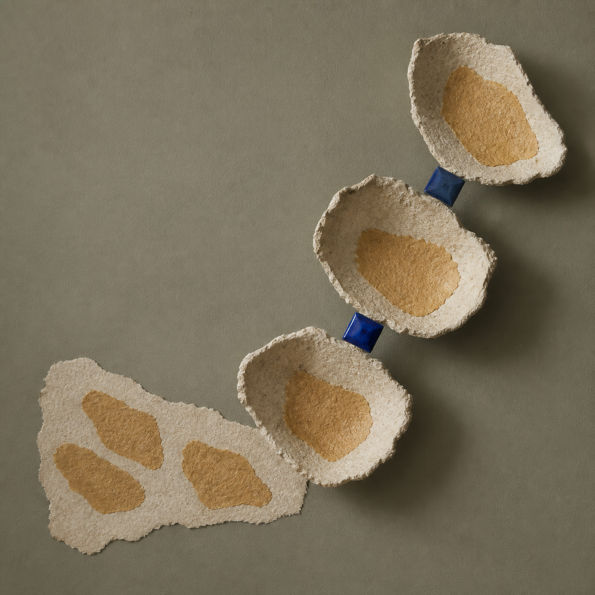
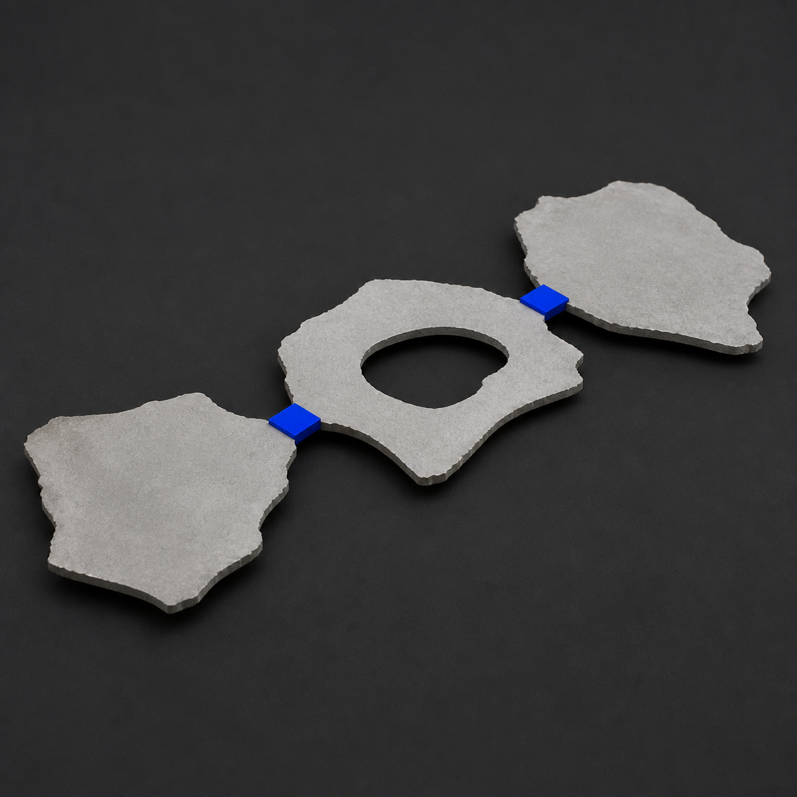
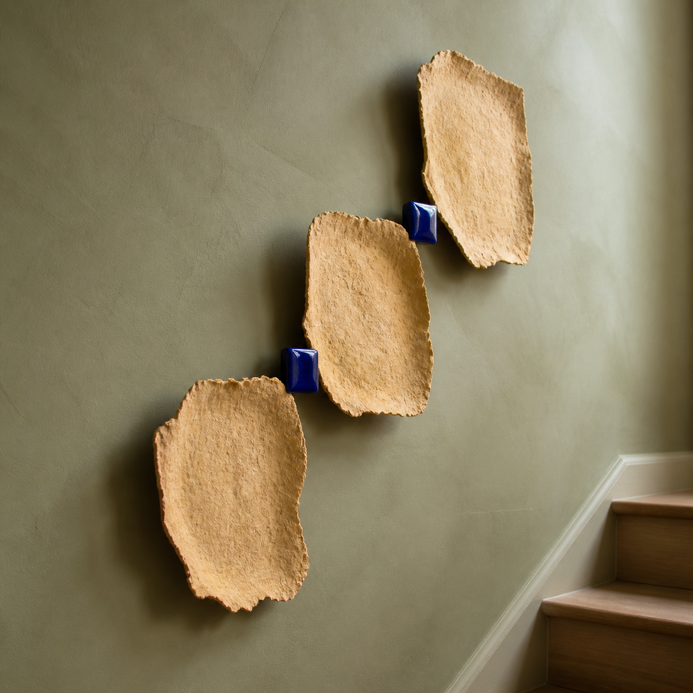
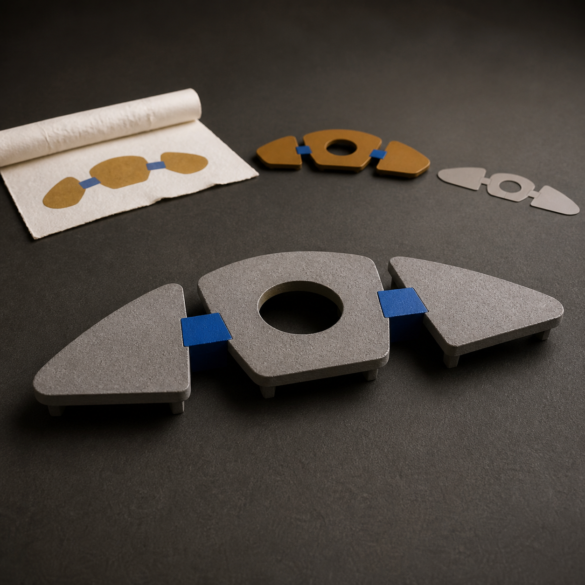

一张已经完成、来源与权利边界清楚的手撕纸拼贴里，三片大小不同的赭黄纸岛沿对角线错开。它们没有大面积重叠，只在两处很小的钴蓝方形接点相遇；远看是三块色面，近看才发现整张画的连续性全压在这两个连接处。
元维构先沿三片纸岛的毛边描出各自轮廓，再标记两个接点分别连接哪两片、接触面积有多大。转译时不把缝隙填成底板，也不把三片合并成一块厚浮雕；两处小桥要保留，三段开放间隙也要继续透气。
中间模型把三片轮廓做成三块独立的浅灰薄板，沿前、中、后三个深度错开。两个可拆的蓝色桥节点只夹住相邻两片，模型撤掉临时托架后，仍要能看清“第一片—桥—第二片—桥—第三片”的受力与观看顺序。
关系稳定后，方向样本可以使用暖赭色铸纸薄壳、深靛蓝陶瓷桥节点和两枚藏在背后的细金属挂件。正面读到三片纸岛被两处小桥串联，斜侧面则能分辨三层离墙距离；它是一件浅壁挂结构样本，不是地图、置物架、家具或建筑模型。
原作拼贴、轮廓与接点草图、可拆节点灰模、实体正侧观察和安装顺序，可以进入同一份数字档案。本文与配图均为方向示意，不对应真实作者、客户、订单、展览、授权或已经完成的项目。
元维构官网｜查看每日新构、项目方法与历史内容 https://chuyiouart.github.io/yuanweigou/index.html